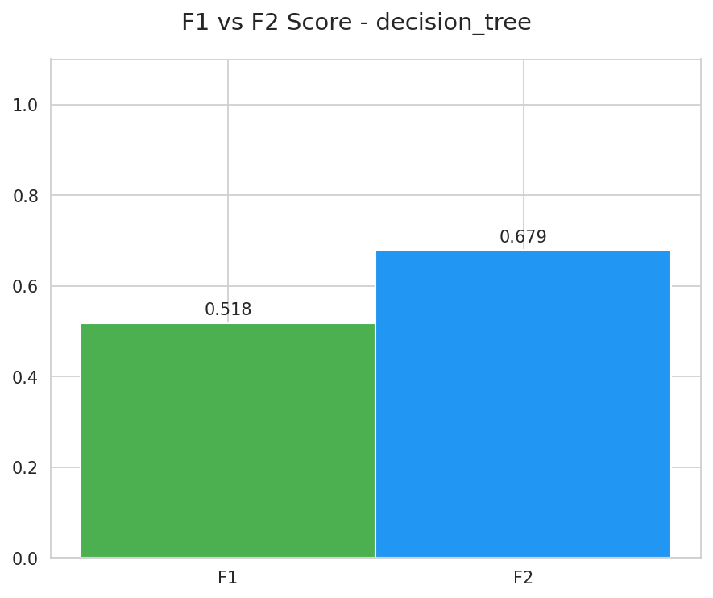

Usa las flechas ← → o la rueda para navegar
Fase · Exp5 · Comparativa directa
F1-F2: XGB VS TREE
Comparacion del balance entre precision y recall con enfasis clinico
Modelo
F1
F2
xgboost
0.5118
0.6778
decision_tree
0.5122
0.6661
F1-F2 - xgboost
F1-F2 - decision_tree

Graficas tomadas de exp_05_hyperparameter_search modelo xgboost y decision_tree
16